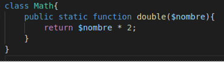
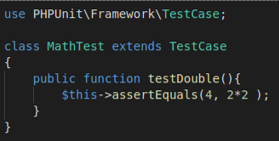
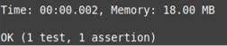
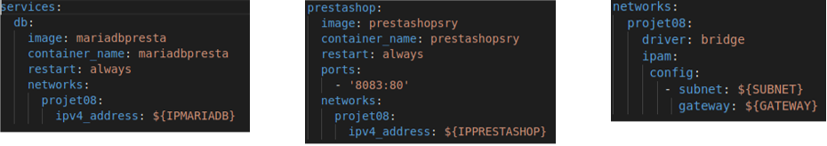
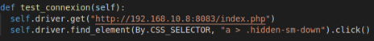
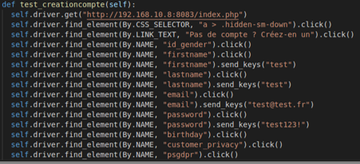
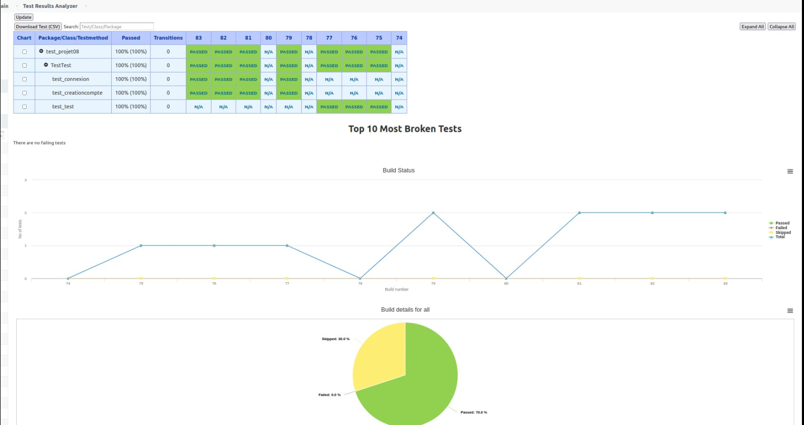
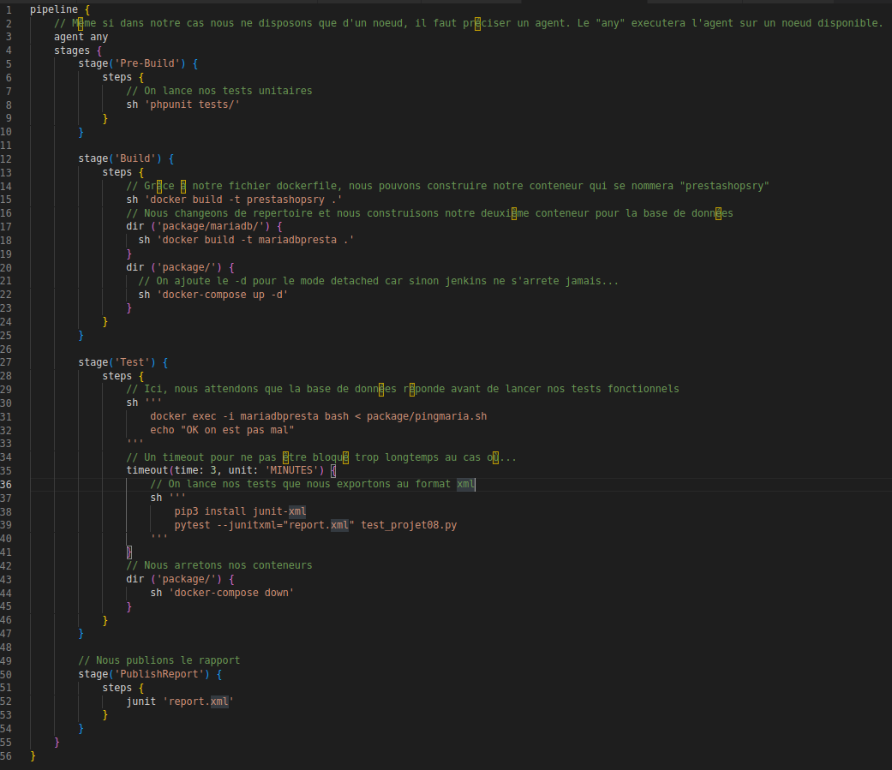

Projet 06 - Automatisez les tests d'une équipe de qualification
Posted on Wed 22 June 2022 in Accueil
Le poste d'expert DevOps peut exister au sein d'une équipe de développement ou de test. Le but de cet article est de créer des tests automatisés avec l’outil Selenium et Jenkins.
Pour cela plusieurs étapes seront faites :
- Pre-build
- Build
- Tests
- Visualisation
Etape 1 : Pre-build
Jenkins est installé dans notre machine virtuelle, et les outils nécessaires pour faire tourner les tests unitaire dans Prestashop.
Ces tests sont lancés avec Jenkins.
Le bon fonctionnement de ces tests signifiera que le projet peut passer en phase “build”.
Pour se faire, nous installons phpunit via composer puis nous créons une simple fonction dans le repertoire src du projet prestashop :

Nous créons ensuite notre test dans le repertoire "test" du projet prestashop :

Enfin, nous utilisons phpunit pour visualiser les tests :

Dans Jenkins, la partie correspondante dans le fichier Jenkinfile est :
stage('Pre-Build') {
steps {
// On lance nos tests unitaires
sh 'phpunit tests/'
}
}
Etape 2 : Build
Dans ce projet nous avons packagé l’application Prestashop dans un container Docker. Etant donné qu'une base de donnée est necessaire, nous avons également utilisé une image mariadb
Ces deux images ont ensuite été "reliés" via docker-compose où un "bridge network" est utilisé afin que les IPs puissent dialoguer

Dans Jenkins, la partie correspondante dans le fichier Jenkinfile est :
stage('Build') {
steps {
// Grâce à notre fichier dockerfile, nous pouvons construire notre conteneur qui se nommera "prestashopsry"
sh 'docker build -t prestashopsry .'
// Nous changeons de repertoire et nous construisons notre deuxième conteneur pour la base de données
dir ('package/mariadb/') {
sh 'docker build -t mariadbpresta .'
}
dir ('package/') {
// On ajoute le -d pour le mode detached car sinon jenkins ne s'arrete jamais...
sh 'docker-compose up -d'
}
}
}
Etape 3 : Tests
Pour cette dernière étape, nous créons un test fonctionnel avec Selenium.
Ce test ouvrira une page de Prestashop et lancera automatiquement un test permettant de valider son fonctionnement, et donc que le code fonctionne, et que le build s’est correctement déroulé.
Dans ce contexte, le test fonctionnel tient lieu de test d’intégration / de validation du build.
Pour nous aider, nous utilisons l'extension Chrome de Selenium IDE pour la génération des tests afin que nous puissions exporter le code generé en python
Nous avons utilisé l'option "Headless" sur le serveur pour l'utilisation sans interface utilisateur
- 2 tests sont ici crées :
- Test de connexion afin de savoir si le bouton "Connexion" est bien accessible

- Test de création d'un nouveau compte afin de voir si l'ensemble des champs nécessaires sont disponibles

Dans Jenkins, la partie correspondante dans le fichier Jenkinfile est :
stage('Test') {
steps {
// Ici, nous attendons que la base de données réponde avant de lancer nos tests fonctionnels
sh '''
docker exec -i mariadbpresta bash < package/pingmaria.sh
echo "OK on est pas mal"
'''
// Un timeout pour ne pas être bloqué trop longtemps au cas où...
timeout(time: 3, unit: 'MINUTES') {
// On lance nos tests que nous exportons au format xml
sh '''
pip3 install junit-xml
pytest --junitxml="report.xml" test_projet08.py
'''
}
// Nous arretons nos conteneurs
dir ('package/') {
sh 'docker-compose down'
}
}
}
Etape 4 : Visualisation
De nombreux modules Jenkins permette de visualiser les résultats des tests.
Dans notre cas, nous avons utilisé le plugin SeleniumHTMLReport. Mais celui de "Open Blue Ocean" n'est pas mal non plus
Voici une idée d'un DashBoard qu'il sera possible de rendre plus sympathique :

Pour information, voici le Jenkinsfile complet :
